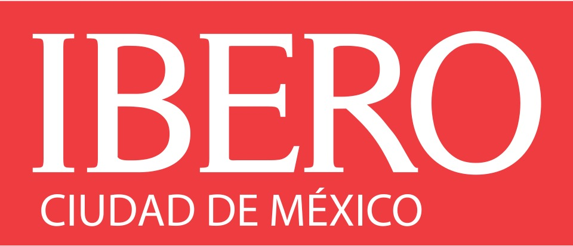
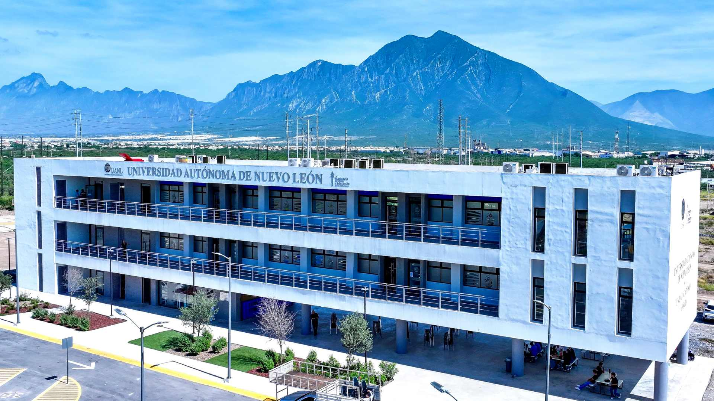
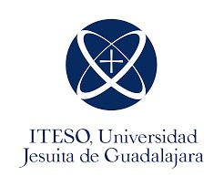

Universidad Iberoamericana de San Ignacio de Loyola
† Categoria: Privada
† Programas académicos principales: Licenciaturas y posgrados en áreas como Comunicación, Arquitectura, Derecho, Psicología, Ingeniería, Negocios, Diseño y Humanidades.
† Ubicación de campus:
- Principal: Santa Fe, Ciudad de México.
- Campus afiliados (fuera de Yucatán): Ibero Puebla en San Andrés Cholula,
- Puebla
(también hay campus en otras ciudades del país).
† PROCESO DE INSCRIPCIÓN:
1. Solicitud en línea
2. Entrega de documento
3. Examen o eveluacion
4. Entrevista
† PAGOS.
- Pago de examen: $1,000 MXN
- Inscripción: $20.000 MX
- Mensualidad: $20,000 - $30.000 MXN


Universidad Nacional Autonoma de Mexico
† Categoría: Publica Nacional
† academicos principales: Amplia oferta en Ciencias Naturales, Sociales Ingenieria, Humanidades, Biologia, Quimica, Derecho, Economia y muchos más a nivel Licenciatura, maestria y doctorado.
† Ubicacion de campus:
- ENES Unidad Merida(Escuela Nacional de Estudios Superiores,Merida)
- CEPHCIS(Centro Peninsular en Humanidades y Ciencias Sociales,Merida)
- Ciudad Universitarias,Ciudad de Mexico(campus principal) y multiples facultades/centros en la CCDMX y otras entidades del pais
† PROCESO DE INSCRIPCIÓN:
1. Publicación de convocatoria
2. Registro en línea
3. Pago de examen
4. Presentar examen de admisión
5. Resultados
6. Inscripción con documentos
† PAGOS
- Examen: $480 - $490 MXN
- Inscripcion: Gratuita
- Mensualidad: Gratuita

Universidad Anáhuac Mayab
† Categoria: Privada (pertenece a la Red Anáhuac).
† Ofrece licenciaturas en áreas como: Derecho, Administración, Psicología, Nutrición, Ingeniería y Comunicación, además de posgrados (maestrías y doctorados).
† Ubicacion:
- Carretera Mérida-Progreso km 15.5 (Campus Anáhuac Mayab).
- Universidad Anáhuac México – Campus Norte (Edo. de México)
- Universidad Anáhuac México – Campus Sur (CDMX)
- Anáhuac Cancún (Quintana Roo)
- Anahuac Veracruz (Xalapa)
- Anáhuac Puebla (Puebla)
- Anáhuac Oaxaca (Oaxaca), entre otros.
† PROCESO DE INSCRIPCIÓN:
1. Registro en línea
2. Entrega de documentos
3. Examen de admisión o evaluación interna
4. Entrevista (en algunos casos)
5. Pago de inscripción
† PAGOS
- Examen:$1,000 – $1,500 MXN
- Inscripción:$20,000–$30,000 MXN
- Mensualidad:$15,000–$25,000 MXN
Benemérita Universidad Autónoma de Puebla.
† Categoria: Publica.
† Programas académicos principales: Licenciaturas y posgrados en ciencias sociales, humanidades, administración, ingeniería, salud, educación, artes, ciencias, etc. (amplia oferta típica de universidad pública).
† Ubicación de campus:
- Puebla
- Ciudad Universitaria (sede principal) y otras zonas en la ciudad y regiones dentro del estado de Puebla.
† PROCESO DE INSCRIPCIÓN:
1. Registro en línea
2. Entrega de documentos
3. Examen de admisión o evaluación interna
4. Entrevista (en algunos casos)
5. Pago de inscripción
† PAGOS
- Examen:$1,000 – $1,500 MXN
- Inscripción:$20,000 – $30,000 MXN
- Mensualidad:$15,000 – $25,000 MXN

Instituto Politécnico Nacional.
† Categoria: Publica.
† Programas académicos principales: Ingeniería, Ciencias Aplicadas, Tecnología, Administración, Ciencias Básicas y Técnicas en muchos niveles.
† bicación de campus Principal:
- Ciudad de México (con múltiples unidades en la capital).
† PROCESO DE INSCRIPCIÓN:
1. Registro en convocatoria
2. Pago de examen
3. Presentar examen
4. Resultados y Inscripción
† PAGOS
- Examen: $525 MXN
- Inscripción: Gratuita
- Mensualidad: Sin colegiatura (pública)

Universidad Autónoma Metropolitana.
† categoría: Publica.
† Programas académicos principales: Licenciaturas, maestrías y doctorados en ciencias, ingeniería, humanidades, ciencias sociales, biología, matemáticas, ingeniería ambiental, entre otros.
† Ubicación de campus:
- Varios campus en Ciudad de México.
- Estado de México (Unidades Azcapotzalco, Iztapalapa, Cuajimalpa, Xochimilco y Lerma).
† PROCESO DE INSCRIPCIÓN:
1. Publicación de convocatoria
2. Registro en línea
3. Pago de examen
4. Presentar examen de admisión
5. Resultados
6. Inscripción con documentos.
† PAGOS
- Examen: $360 MXN
- Inscripción anual: $128 MXN
- Pago trimestral: $128 MXN

Universidad autonoma de Nuevo León.
† Categoria: Publica.
† Programas académicos principales: Muy amplia oferta en ingeniería, ciencias sociales, salud, economía, negocios y humanidades a nivel licenciatura y posgrado (una de las universidades públicas con más programas).
† Ubicación de campus:
- Nuevo León
- Varias sedes dentro del estado
- Ciudad Universitaria en San Nicolás de los Garza
- Monterrey
- campus regionales en Linares
- Sabinas Hidalgo
- Mederos.
† PROCESO DE INSCRIPCIÓN:
1. Registro en línea
2. Pago de examen
3. Presentar examen
4. Resultados
5. Inscripción
† PAGOS
- Examen: $800 – $1,000 MXN
- Inscripción: $2,000 – $4,000 MXN
- Mensualidad: $1,000 – $3,000 MXN.

Universidad de las Américas Puebla.
† Categoria: Privada.
† Programas académicos principales: Finanzas, Negocios, Ciencias Sociales, Artes, Ingeniería y Economía, con enfoque internacional y programas de intercambio estudiantil.
† Ubicación de campus:
- San Andrés Cholula
- Puebla
- México.
† PROCESO DE INSCRIPCIÓN:
1. Solicitud en línea
2. Evaluación académica (examen o promedio)
3. Entrevista (opcional)
4. Pago de inscripción.
† PAGOS
- Examen: ~$1,000 MXN
- Inscripción: $20,000 MXN
- Mensualidad: $15,000 – $25,000 MXN


Instituto Tecnológico Autónomo de México.
† Categoria: Privada.
† Programas académicos principales: Economía, Derecho, Ciencia Política, Administración, Ingeniería (Industrial, Computación, etc.).
† Ubicación de campus:
- Campus Río Hondo (licenciaturas)
– Ciudad de México
- Campus Santa Teresa (posgrados)
– Ciudad de México.
PROCESO DE INSCRIPCIÓN
1. Elegir programa
2. Crear cuenta en línea
3. Llenar solicitud
4. subir documentos (INE, CURP, etc.)
5. Recibir aceptación
6. pagar inscripción.
† PAGOS
- Examen de admisión:$600 – $700 MXN
- Inscripción (única): $15,000 – $25,000 MXN (puede variar)
- Mensualidad: $17,000 – $25,000 MXN al mes o $87,000 – $144,000 por semestre.

Instituto Tecnológico Autónomo de México.
† Categoria: Privada.
† Programas académicos principales: Economía, Derecho, Ciencia Política, Administración, Ingeniería (Industrial, Computación, etc.).
† Ubicación de campus:
- Campus Río Hondo (licenciaturas)
– Ciudad de México
- Campus Santa Teresa (posgrados)
– Ciudad de México.
† PROCESO DE INSCRIPCIÓN
1. Registro en línea
2. Entrega de documentos
3. Examen de admisión
4. Resultados
5. Inscripción.
† PAGOS
- Examen: $800 MXN
- Inscripción: $1,000 – $3,000 MXN
- Mensualidad: Baja (pública, cuotas semestrales).


Instituto Tecnológico y de Estudios Superiores de Occidente.
† Categoria: Privada.
† Programas académicos principales: Ingenierías, Comunicación, Diseño, Psicología, Administración y Posgrados (ej. Desarrollo humano, Educación, etc.).
† Ubicación de campus:
- Guadalajara, Jalisco (campus principal).
† PROCESO DE INSCRIPCIÓN:
1. Asistir a sesión informativa
2. Llenar solicitud de admisión
3. Presentar examen
4. Recibir resultados
5. Pagar inscripción
6. Entregar documentos.
† PAGOS
- Examen de admisión: $1,200 MXN
- Inscripción: $15,000 – $20,000 MXN
- Mensualidad: Y $12,000 – $17,000 MXN al mes o $135,000 – $145,000 por semestre.


Universidad Autónoma de Yucatán.
† Categoria: Publica.
† Programas académicos principales: Medicina, Derecho, Ingeniería, Turismo, Arquitectura, Posgrados en ciencias, salud y ambiente.
† Ubicación de campus:
- Mérida, Yucatán (varias facultades y preparatorias).
† PROCESO DE INSCRIPCIÓN:
1. Registro a convocatoria (febrero-marzo aprox.)
2. Presentar examen EXANI-II
3. Publicación de resultados
Inscripción en 2 fases:
1. Registro en línea y pago
2. Entrega de documento.
† PAGOS
- Aproximadamente $600 – $800 MXN
- Inscripción: $7,000 – $8,000 MXN por semestre
- Mensualidad: Gratuita.


MIEMBROS DE EQUIPO
-Manzilla Rafael Angel Azahel
-Toledo Lopez Angel Joel.